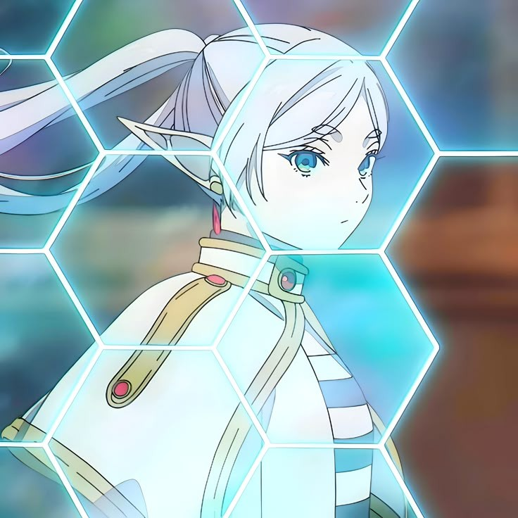

Frieren es la protagonista del manga y anime "Frieren: Beyond Journey's End". Es una maga elfa que viaja por el mundo después de la derrota del "Rey Demonio". Frieren es conocida por: - Su habilidad mágica excepcional - Su personalidad reservada y introspectiva - Su conexión con su compañero de viaje, Himmel - Su búsqueda de conocimiento y comprensión del mundo Frieren es un personaje complejo y fascinante que explora temas de identidad, amistad y crecimiento en la serie.
Frieren es la protagonista del manga y anime "Frieren: Beyond Journey's End". La historia sigue su viaje después de la derrota del "Rey Demonio". A continuación, te presento una breve sinopsis de la historia de Frieren: # Infancia y formación Frieren es una elfa que nace en un bosque sagrado. Desde joven, muestra una gran habilidad para la magia y es enviada a estudiar en una academia de magia. # La aventura con Himmel Frieren conoce a Himmel, un sacerdote humano, durante una misión para derrotar al "Rey Demonio". Después de la victoria, Frieren y Himmel deciden viajar juntos por el mundo. # La búsqueda de conocimiento Durante su viaje, Frieren busca ampliar sus conocimientos mágicos y comprender mejor el mundo. También explora su propia identidad y su conexión con Himmel. # Desafíos y crecimiento Frieren y Himmel enfrentan numerosos desafíos en su viaje, desde batallas contra monstruos hasta confrontaciones con otros personajes. A través de estas experiencias, Frieren crece y madura como persona y maga. La historia de Frieren es una emocionante aventura llena de acción, magia y exploración. También es una profunda reflexión sobre la identidad, la amistad y el crecimiento personal.
